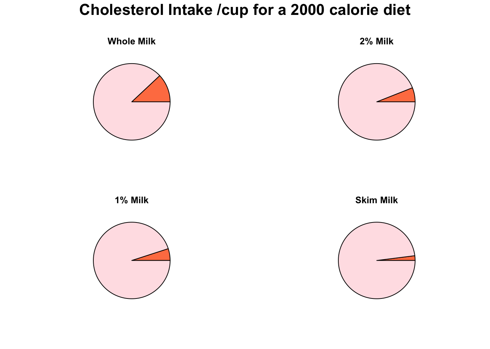
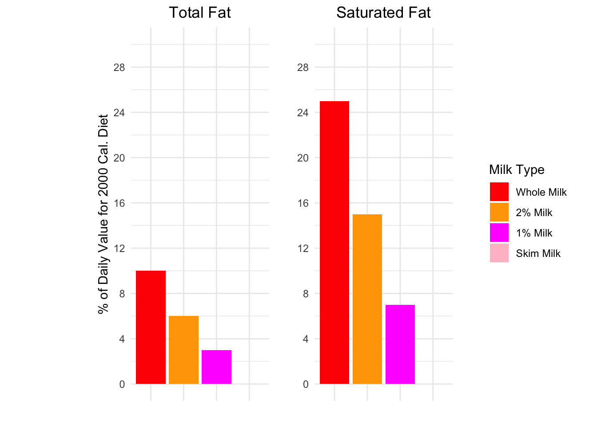

Nutrition Analysis
| Nutritional Components | All 4 Milk Types |
|---|---|
| Vitamin C [Ascorbic acid] (mg) | 1.20 |
| Iron (mg) | 0.00 |
| Carbohydrate (g) | 13.01 |
| Fiber (g) | 0.00 |
| Sugars (g) | 12.00 |
| Net carbs (g) | 13.01 |
The above table provides us with nutritional components that are the same for all 4 types of milk.
To analyze differences in milk types, we will subtract the values for skim milk from the mean of the other milk types. If the result is not zero, it indicates a difference. Since skim milk has the least fat, it and whole milk will have extreme values, meaning the mean of the others won’t match skim milk.
| Nutritional Components | Mean Difference |
|---|---|
| Calories | 38.66667 |
| Calcium (mg) | 50.40000 |
| Sodium (mg) | -3.20000 |
| Protein (g) | 0.00000 |
| Cholesterol (mg) | 18.40000 |
While the table identifies which components differ, it only indicates where to analyze further. Visualizing these differences with bar plots will provide more insightful and intuitive comparisons.
Bar Plots for Nutritional Components with Different Values Across Milk
Types


There is a decreasing trend as we go towards the lower fat options for calories and cholesterol. Quantity of sodium is roughly the same for all 4 (higher in 1% and skim). Skim has the least amount of calcium. The rest seem to have the same amount.

The above pie charts show the cholesterol intake per cup for a 2000 calorie diet. Obviously, higher fat means more cholesterol. This intake is quite important as a health conscious person is likely to lean towards the lower fat options because of the lower cholesterol. Accompany the individual cholesterol with the fact that most people will use milk in some way and not just drink it straight up implies that the way they consume it (through cereal or drinks) would increase their cholesterol intake due to what they added.

The fat content decreases progressively from Whole Milk to 2% Milk, 1% Milk, and Skim Milk, reflecting their names. The bar plots above effectively illustrate this reduction. For instance, a 1% decrease indicates that our total and saturated fat intake is halved when transitioning from Whole to 2% Milk, and further reduced from 2% to 1%, ultimately reaching zero in Skim Milk.
We will now perform a regression analysis on the five most recent sales ratios of the four types of milk (more about the ratios is here) with their respective Cholesterol and Saturated Fat content. This analysis aims to determine if consumers have become more health-conscious over the years.
| term | estimate | std.error | statistic | p.value |
|---|---|---|---|---|
| Intercept | 0.8818317 | 0.0249940 | 35.2817248 | 0.0000000 |
| Year 2020 | 0.0169234 | 0.0229558 | 0.7372161 | 0.4740873 |
| Year 2021 | -0.0340774 | 0.0229558 | -1.4844804 | 0.1615206 |
| Year 2022 | -0.0072458 | 0.0229558 | -0.3156431 | 0.7572835 |
| Year 2023 | 0.0067313 | 0.0229558 | 0.2932278 | 0.7739765 |
| Cholesterol (mg) | 0.0067197 | 0.0038459 | 1.7472404 | 0.1041602 |
| Saturated Fat (g) | -0.0213631 | 0.0235214 | -0.9082413 | 0.3802799 |
Cholesterol:
This positive coefficient, 0.006719714, suggests that higher cholesterol content is associated with a higher Sales Ratio. However, this relationship is not statistically significant (p-value 0.1041602).
Saturated Fat:
This negative coefficient, -0.021363109, indicates that higher saturated fat is associated with a lower Sales Ratio, but again, this is not statistically significant (p-value 0.3802799).
Conclusion:
Based on this regression analysis, there is no strong or significant evidence to suggest that people have become more health-conscious over the years based on changes in sales ratios of milk types associated with cholesterol and saturated fat content.